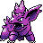

#033
Nidorino
Poison
Abilities: Poison Point, Rivalry, Hustle
Base stats BST 365
HP61
Attack72
Defense57
Speed65
Sp. Atk55
Sp. Def55
Evolution
dbbw EVOLVE_ITEM, MOON_STONE, NIDOKINGLevel-up learnset
LevelMoveType
Lv. 1Focus EnergyNormal
Lv. 1Peck
Lv. 1Poison StingPoison
Lv. 1LeerNormal
Lv. 6Fury AttackNormal
Lv. 9Double KickFighting
Lv. 12Poison FangPoison
Lv. 15Horn AttackNormal
Lv. 23Toxic SpikesPoison
Lv. 27Poison JabPoison
Lv. 35Sucker PunchDark
Lv. 50ToxicPoison
Lv. 71Earth PowerGround